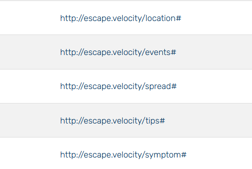
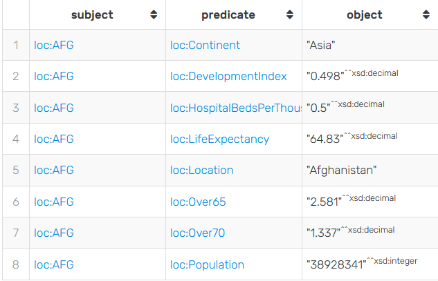
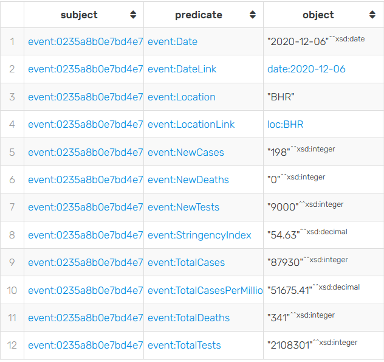
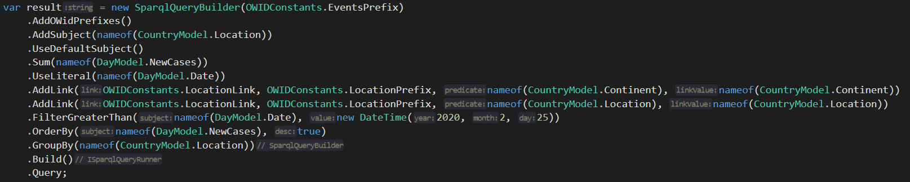
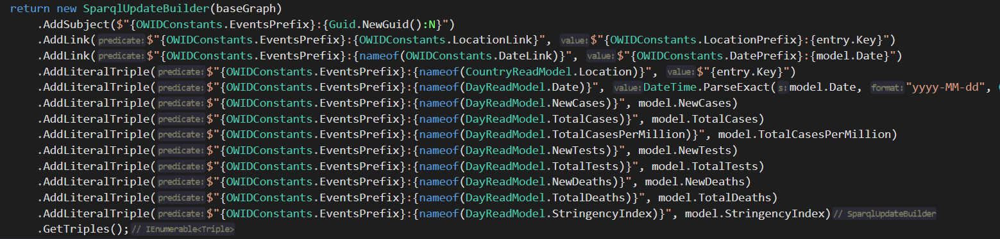
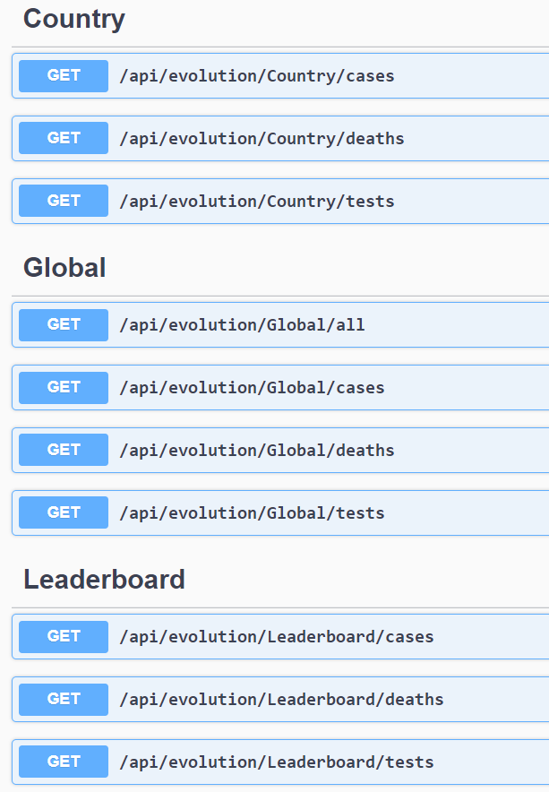
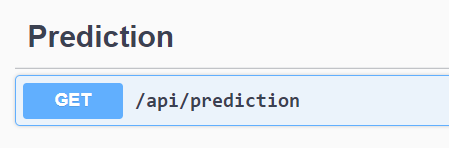
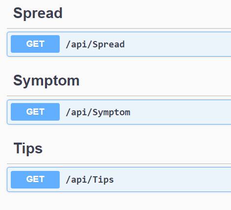

CODA - Final Technical Report
1. Abstract
In this document we will present the internal data models to be used and the external data sources managed
by the Web application which we will implement.
2. Introduction
Data visualization refers to the techniques used to communicate information from data through
visual representation. Its main purpose is to distill large data sets into visual graphics
to allow an easy understanding of the complex relationships within the data. It is often used in a way
interchangeable with terms such as informational graphics, statistical graphics and information
visualization.
It is one of the steps in the data science process developed by Joe Blitzstein, who is a
framework to address the tasks of data science. After the data is collected, processed and modeled,
relationships must be visualized so that a conclusion can be drawn.
For this reason, planning the models used in the Web application is an important process for the user to
benefit from the best information when accessing the web page.
3. Context of Use
The context of use is the real conditions in which a given software product is used or will be used
in a normal daily work situation.
COVID-19 data for all site is an evolving software product that provides the latest data
for the entire population of the planet about the latest statistics on the global spread of the virus.
Users who access this community have access to the latest information about coronavirus, such as:
- Cases, deaths and the number of total healed
- Information on how the virus spreads
- Information about the symptoms of the virus
- Information about the evolution of the virus
- Predictions about the evolution of the virus for the next few days.
4. Main Audience
The sites about coronavirus are the most used sites in the last year. How virus can affect anyone, the site
is accessed mainly by a majority of the globe with access at the Internet.
5.Internal Data Models
The Web application developed by us has two types of users, those who manage the page and the public one who
can access information about coronavirus.
Administrators are the ones who can add new coronavirus cases, tips against the virus and the latest virus
information to the application. To add a new coronavirus case, the administrator must add the following
information: the day the case was reported, the person's gender, age, location, and other relevant data.
To add new virus advice or information, the administrator must add a title, description, and certain tags to
make them easier to be found.

Here you can see the model for adding a new case of coronavirus.
A person who visits the web page can view statistics about the evolution of the virus or predictions for the
next days of the virus over a certain period of time, over a certain age range, location, gender or
different tags. Below you can see a model of an evolution.

A user can also look for some tips for preventing the virus based on a title or certain tags.

6. External Data Sources
External data is data that is not collected by us. This data would be obtained from a source outside of our
project. For a start we thought of using the Apify API which gives us information about coronavirus from a
selected country.

7. Linked Data Principles
Our application conforms with the linked data principles because we use RDF and for a specific URI the
application will create a query that provides useful information about what the user was looking for.
We use URI as names for things, and users will use HTTP URIs to search for some informations.
We gather most of our data from the OurWorldInData
source.
We have implemented parses which can automatically take in the necessary data inside our Coda19.Reader
project.
7.1 Internal graph modelling
Our system is comprised of the following graphs:

7.1.1"<http://escape.velocity/location#>"
This graph covers all the possible locations in our system, identified by a continent and a country.
The ID of the graph is represented by the country code.

a
7.1.2"<http://escape.velocity/events#>"
In this graph we store all the cases on a day basis, per location. This graph uses two links, one for
Location, and one for Date. We decided to create a sparql prefix for date as well, for easier
querying.
The id is automatically generated on insertion inside our project.

7.1.3 Support graphs
For our Symptoms, Tips and Spread graphs, we wont go in detail, as they are simple. The only offer
a collection of strings which users can read when they open our websites. Inside our API, we pick
one
at random from each graph.
7.2 SparQL Usage
In order to have a good experience using SparQL across 4 APIs, we've decided the best course
of action would be to implement a mechanism which would allow us to send queries and commands in the
easiest way.
With this reason in mind we built the SparqlQueryBuilder and the SparqlUpdateBuilder. They
allow
us to create through code all the queries in commands in a simple and explicit way, hiding all the
SparQL
behind the scenes. Ofcourse, a level of SparQL knowledge is still needed to understand the concepts of
subject,
predicate and literal.
7.2.1 SparqlQueryBuilder
A query using the QueryBuilder looks something like this:

The query builder also offers
- Pagination, Aggregation, Inter-Graph Querying
- Instant execution of the query through our inhouse ISparqlQueryRunner
- Return in a json format of all the items returned by SparQL
- Deserialization in a choice of a C# class that gets automatically paginated
7.2.2 SparqlQueryBuilder
For our update builder, it looks something like this:

It offers the following
- Building a SparQL update, supporting multiple formats, and linking to another graph.
- Instant asynchronous running with our inhouse SparqlUpdateRunner
7.2.3 Sesame Connector
For communication with the SPARQL Endpoint provided by GraphDB, se use the SesameHttpProtocolConnector
provided by the DotNetRdf C# NuGet package.
8. Project Progress
From the beginning of the implementation of this project we planned to develop a series of functionalities
that would offer users a perspective on the data related to COVID-19. These functionalities would be:
- Information about global cases on a period of time
- Information about global test performed on a period of time
- Information about global deaths on a period of time
- Information about local cases on a period of time
- Information about local test performed on a period of time
- Information about local deaths on a period of time
- Leaderboards with countries with most cases
- Informations about history, spread, symptoms and protections
- A neuronal network system that will calculate de number of cases for a period of time
For the most part, we followed the plan and implemented all the functionalities, only we made small
compromises.
In some parts we did not respect the initial design and on the home page we gave up some graphics.
9. API Layers
9.1 API Layers - Evolution
First APIs implemented are those needed for showing the data on the Home tab. Here the user can
analyze some
charts
regarding the evolution of the virus in a period of time globally or specific for some countries.

9.2 API Layers - Prediction
9.2.1 API Layers - Prediction - Public
The Prediction API will the take care of orchestrating and feeding data to the internal API. it
will also
handle client requests and data parsing from and to the internal API.

9.2.1 API Layers - Prediction - Internal
Here we have an Internal API build specifically for predicting cases based on a loopback. Inside
this API
we also have a project where we can train another model or improve it. We use a LongShortTermMemory
neural network with a Loopback of 14.
This API Is hosted using flask and only serves a getPrediction endpoint.
9.3 API Layers - Support
The Support set of APIs returns data about spread, symptoms and protections to the user.

10.Deployment
The entire system is deployed on azure
- one react static client under a NET .Core MVC 5 in a Azure AppService.
- one flask API as internal
- The left 3 APIs as IIS Websites with custom DNS